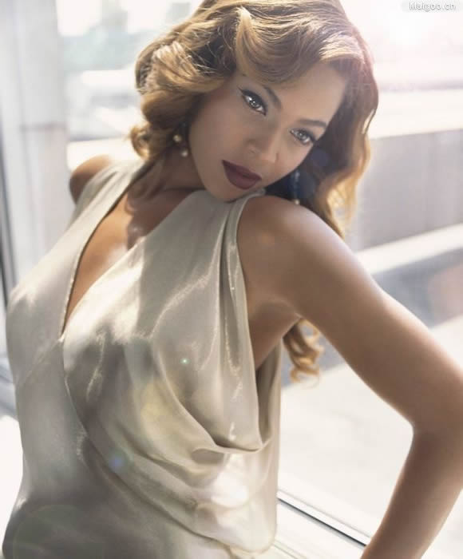
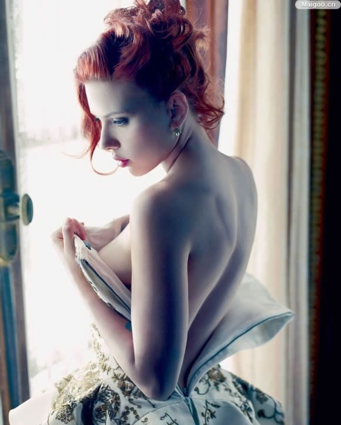
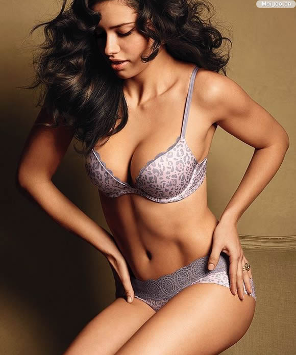
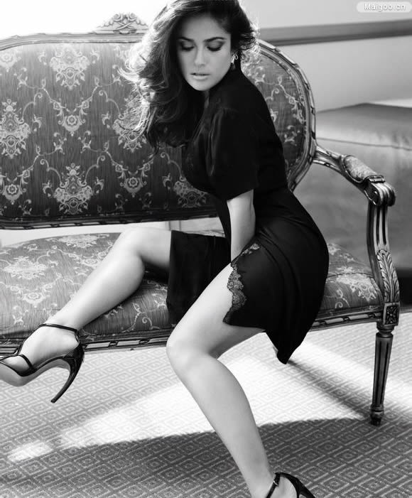
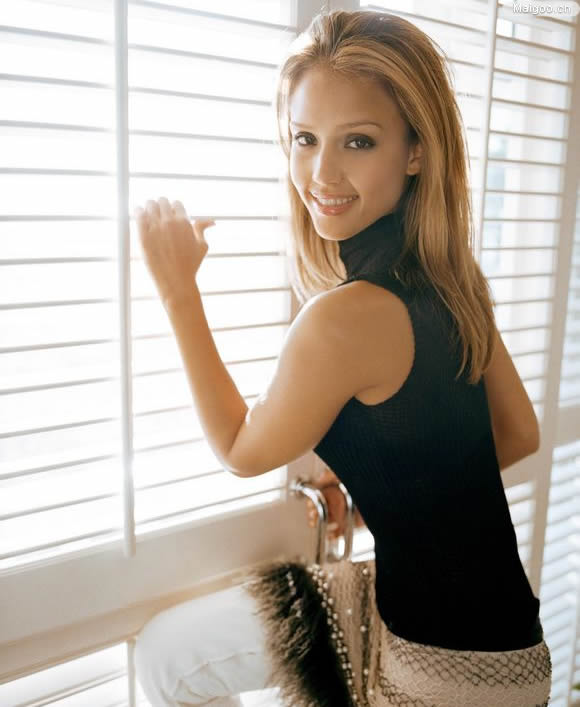
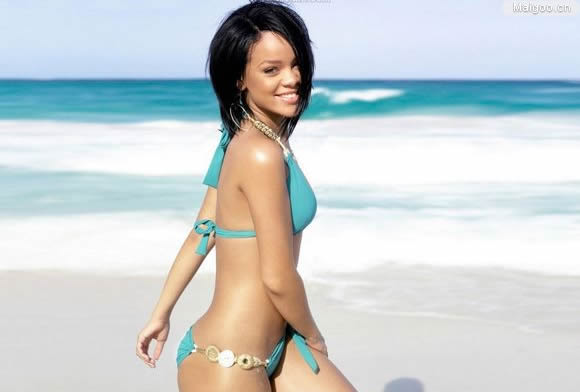
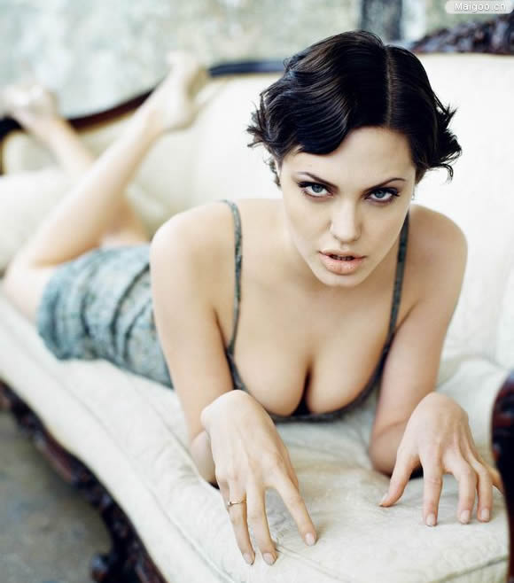
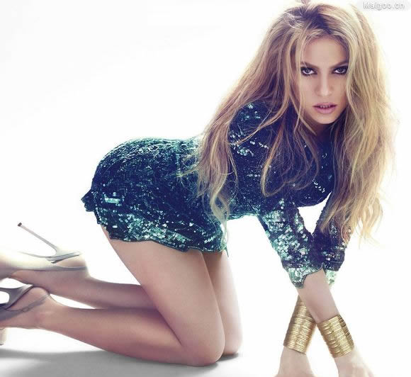
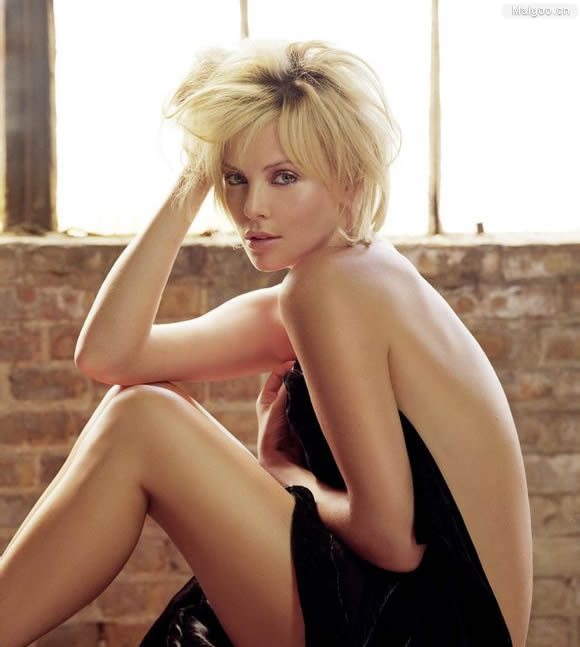
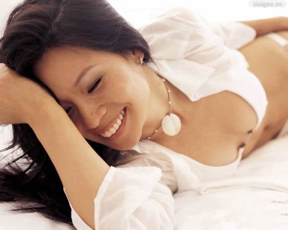

洛杉矶时报全球50位最美丽的女性名人排行
摘要：美国著名的洛杉矶时报评选出了全球50位最美丽的女性名人，章子怡并列碧昂斯，成功当选，并且排名华裔女星的第一位、是唯一入围的中国女星。在华人女星当中，刘玉玲和Maggie Q也占有一席之地。
美国第三大报《洛杉矶时报》评选出了全球“50位最美丽的女性名人”，章子怡入选其中，且排名华裔女星的第一位。
《洛杉矶时报》对章子怡的入选理由这样描写：“在《卧虎藏龙》中展示了她的武打，她的《艺伎回忆录》让人陶醉，她在《狸御殿》中表演了踢踏舞，她曾经是最年轻的戛纳电影节评委。”在西方人眼中，章子怡无疑是有代表性的东方女性面孔。此外，与章子怡一同入选的华裔女星还有刘玉玲与MaggieQ。
这50位女性无一不拥有着美丽的面孔，迷人的笑容，而她们的美丽被认可则更多的来源于她们内在的魅力。斯嘉丽·约翰逊不理会世俗标准的特立独行；蕾哈娜与男友纠纷过程中表现出的勇敢坚强；安吉丽娜·朱莉在慈善事业方面的巨大贡献；米歇尔·奥巴马——这位奥巴马能够连任美国总统不得不感谢的充满智慧的女人……这一切都为她们戴上了更加美丽的光环。
《洛杉矶时报》评出“全球50位最美丽的女性名人”全名单：
1.碧昂丝
入选理由： 除了天赋歌喉与身材美貌，碧昂丝的唱功也不是盖的。此外她还热心公益事业，组建了专门的慈善基金帮助了包括卡特里娜飓风受害家庭在内的许多人。
2.斯嘉丽·约翰逊
入选理由： 首先她没跟风把自己饿成细脚伶仃的圆规，其次她没有为自己的生意四处吆喝，以上两点已经很难得了。何况从《迷失东京》开始她早已向我们展示了她的性感与演技。ps：她还能踢钢铁侠屁股呢。
3.阿德瑞娜·利玛
入选理由：阿德瑞娜·利玛在秀场上有着女王般的气场（与外表的华丽形成巨大反差的是，她虔信天主教——有时在等秀间隙还捧着《圣经》呢）；在生活中则是不折不扣的贤妻良母，马科·雅里奇真有福！
4.梅根·福克斯
入选理由：当被问到是否觉得自己是年轻女性的榜样时，狐狸妹答道：“如果”榜样”是指让我向女孩们说教女性应该贤良端淑三从四德那我显然不是；如果你想让你的女儿们变得独立、坚强，并能坦然为自己的信念而战，那么我是的。”她也确实如此。
5.萨尔玛·海耶克
入选理由：萨尔玛·海耶克集美貌、智慧、风趣于一身，熟女风姿撩人心。绝对是少女的人生导师、少男的仰慕对象！
6.杰西卡·阿尔芭
入选理由：自从《罪恶之城》之后阿尔芭一直是许多人的梦中情人。她对公益事业也很热心，甚至同意为制片人鲍勃·韦斯坦无偿出镜，只要对方向美国艾滋病研究基金提供大额捐赠。
7.蕾哈娜

入选理由：蕾哈娜的音乐才华毋庸置疑，长得也是盘亮条顺。对克里斯·布朗圣母般的胸怀那也不是一般人可以企及的……呃。
8.安吉丽娜·朱莉
入选理由：就冲她那么爱孩子也该投上一票。近几年AJ作品不多，但依然让每一个人都记得她。无论是出席商业场合还是参与慈善活动始终气场无敌。
9.夏奇拉
入选理由：夏奇拉不仅歌喉令人倾倒，对儿童福利事业的全情投入也让人赞赏。
10.查理兹·塞隆
入选理由：塞隆是当前好莱坞最有演技的女星之一；而她的美也充满变化，或端庄或美艳或帅气，屡屡带给我们惊喜。至于她对南非慈善事业不遗余力的努力，早已广为人知。
11.伊娃·门德斯
入选理由：尽管牙齿严重咬合不齐，伊娃·门德斯却从未想过去矫正，反而轻松自嘲为“自带开瓶器”，这等自信豁达不是每个女人都有的，不然她怎么能老牛吃嫩草、攻陷万人迷高司令呢？
12.芭儿·莱法利
入选理由：作为第一位登上《体育周刊》泳装特辑的以色列模特，芭儿·莱法利确实称得上尤物一枚。最起码，你们总该相信小李子刁钻的眼光吧？
13．泰拉·班克斯
入选理由：作为成功的脱口秀主持人及《全美超模新秀大赛》的节目监制，这位前维密天使为我们展示了一名出色模特在离开T台之后能有多大潜力可以发挥。
14.米拉·库妮丝
入选理由：身形娇小的米拉·库妮丝这两年频频登上老美榜单，除了样貌不错角色讨喜之外最大的原因在于她还是一名资深WOW女玩家——多少wower在帮她义务刷票啊。
15.玛琳·阿克曼
入选理由：动作片（《守望者》）、喜剧片（《伴侣度假村》）、爱情片（《假结婚》）这三大人气片种都被她演完了，群众基础很广泛啊。
16.佩内洛普·克鲁兹
入选理由：因为她和斯嘉丽·约翰逊的美丽才成就了伍迪·艾伦本人最满意的影片《午夜巴塞罗那》，更不用提她在阿莫多瓦影片中的那些颠倒众生的演绎了。
17.海蒂·克鲁姆
入选理由：自从1992年出道以来，海蒂·克鲁姆在模特圈的成绩有目共睹。不仅如此，她主持的《天桥骄子》真人秀也拥有广泛拥趸，可谓集美貌才华于一身。
18.斯泰西·凯布勒
入选理由：从摔角场上退役后（她绝对是吸引男性观众买票入场的一大因素），斯泰西·凯布勒又登上了《与星共舞》的舞台，一双玉腿绝对是大杀器。
19.西耶娜·米勒
入选理由：西耶娜·米勒令人印象深刻之处除了她的漂亮面容还因为她那种超然淡定的气质。另外她的着装打扮也颇有创意，有别于一些女星“安全”然而乏味的搭配，时有亮眼之笔。
20.凯拉·奈特莉
入选理由：撇开平胸不说，凯拉·奈特莉看起来确实很美而且特别。更重要的是，她不甘心只当个花瓶，一直在寻求戏路、演技的突破，而且到目前为止她的进步很明显。对于一个演员来说这值得赞赏。
21.宝琳娜·拉比奥
入选理由：这位拉美天后的曲风实在太动感了，舞技也相当不错。
22.瑞秋·麦克亚当斯
入选理由：这位笑容闪闪惹人爱的女星在《恋恋笔记本》中倾倒了高司令，又在《婚礼傲客》里迷晕了欧文·威尔逊，还在《大侦探福尔摩斯》中诱惑了小罗伯特·唐尼，谁能不爱上她呢？
23.章子怡
入选理由：自从在《卧虎藏龙》中展示了她的武打，章子怡这张“富有东方韵味的脸”就为欧美观众所熟知，她在《艺妓回忆录》里让人陶醉，在《狸御殿》中表演了踢踏舞，还曾经是最年轻的戛纳电影节评委。（顺便说一句，尽管小章这几年有不少负面新闻，但她的美貌丝毫未减、演技也日臻完善。）
24.艾丽西亚·凯斯
入选理由：艾丽西亚·凯斯极富音乐才华，得过好些格莱美大奖。此外她还合作组建了一项儿童援助基金，为非洲地区感染艾滋病的家庭提供药物，至今帮助了许多孩子。
25.詹纽瑞·琼斯
入选理由：看过《广告狂人》的观众都会赞同“贝蒂”上榜的！
26.米兰达·可儿
入选理由：拥有天使脸蛋魔鬼身材帅哥老公漂亮娃，“维密天使超模”米兰达·可儿真称得上是幸运儿，难得的是她还有一副好心肠，甚至为了保护小考拉，她情愿裸身上阵做宣传呢。
27.克里斯蒂娜·里奇
入选理由：古灵精怪的里奇一点也不介意出演古怪的角色，比如《亚当斯一家》中的Wednesday小姐，实在令人过目难忘。
28.翠西亚·希弗
入选理由：看过《太空堡垒卡拉狄加》的观众八成会觉得被这样美得像雕塑的机器人妹子统治，听起来……也不像是什么坏事儿
29.凯特·贝金赛尔
入选理由：拜托那些以为《暮光》系列中才有性感吸血鬼的少男少女们去看下《黑夜传说》吧，凯特·贝金赛尔扮演的人挡杀人、佛挡杀佛的吸血鬼女战士绝对够劲儿。里面的异族绝恋也很荡气回肠哟。
30.泰勒·斯维芙特
入选理由：泰勒·斯维芙特人美歌靓，又才华横溢。再说，一般女孩子失恋了只会哭哭啼啼，而泰勒却能灵感滚滚！
31.米歇尔·奥巴马
入选理由：米歇尔·奥巴马被称为“杰奎琳·肯尼迪之后最具时尚品味的第一夫人”，而且她的头脑也非常聪慧。（话说彭将军也挺拿得出手呢，端庄大气歌声美，风衣丝巾造型风靡了一大片儿）
32.加布里埃尔·尤尼恩
入选理由：在《美少女拉拉队》中我们就见识了这位美人出众的演技，但加布里埃尔·尤尼恩最让人尊敬的是她愿意与公众分享她年少时被强暴的不幸遭遇，以声援妇女反暴力活动。她与韦德也是令人称羡的一对
33.卡蕾·库科
入选理由：《生活大爆炸》中的邻家大妞儿佩妮不仅俘虏了科学怪咖4人组，也勾起了全世界科学技术宅们的憧憬之情。
34.卡米拉·贝勒
入选理由：要是原始人类都有《史前一万年》中的卡米拉·贝勒那么美，估计会有前赴后继的男性观众愿意穿越过去茹毛饮血。
35.布蕾克·莱弗利
入选理由：《绯闻女孩》中的塞瑞娜·冯·德·伍德森优雅时尚、品味不俗，现实中的布蕾克·莱弗利也是如此，她的气质与好品味使她得到了一众设计大师的喜爱。
36.刘玉玲
入选理由：尽管潮爷的毒舌真够伤人的，但这丝毫不影响美国人民对玉玲姐的爱慕。她演绎的那些独立叛逆的角色形象性感慑人，魅力无边。
37.佐伊·索尔达娜
入选理由：这位热辣美妞将在《星际迷航》系列新片中出演Lt. Uhura 2.0！真是全球科幻迷的福音。
38.芙蕾达·平托
入选理由：自从《贫民窟的百万富翁》热映之后，全球影迷都认识了这位明眸皓齿的印度美娇娘。美国《人物》杂志曾将她列入最美榜单，确属名至实归。
39.凯蒂·派瑞
入选理由：“水果姐”唱功了得，写词作曲也不在话下，绝对算得上才女一枚。而且她亲了一个女孩，并且喜欢这么做、还把这事儿写成了歌……乔伊的美梦成真了！
40.梅根·古德
入选理由：梅根·古德是个富有个性的女孩儿，无论是青春活泼的大学软妹子、晃晃悠悠的街头小太妹还是身手利落的便衣女探员都手到擒来演绎得惟妙惟肖。她本人在被哥伦比亚电影公司高管德冯·富兰克林套牢前还上演过婚礼当天失踪记。
41.利昂娜·刘易斯
入选理由：自从06年问鼎英国达人秀总冠军之后，利昂娜·刘易斯一路披靡成功闯入北美音乐圈，实力不容置疑。就连毒舌的西蒙·考威尔也声称是她的粉丝，这可真不容易。
42.金·卡戴珊
入选理由：当然不少人很烦她。不过她确实很清楚自己要什么（无穷无尽的关注）并且知道怎么去争取，从某种意义上来说也算毅力可嘉呢。
43.丹尼卡·帕翠克
入选理由：这位拉风的女赛车手仿佛速度与激情的真人版，她活力充沛、充满自信，还拥有印第安纳波利斯500英里比赛的女性最佳纪录。健康的身体散发的美是无与伦比的。
44.贾达·萍克·史密斯
入选理由：谁都知道她是威尔·史密斯的贤内助，但实际上她还是个颇有才华的摇滚女歌手，曾经还组过自己的乐队“邪恶智慧”，而且舞技也是一流。
45.霍莉·麦迪森
入选理由：作为《花花公子》最著名的模特之一，诱惑中带点天真的霍莉·麦迪森曾被许多男人目为“最佳女友”人选，此外她的主持功底也相当不错
46 阿什丽·格林尼
入选理由：阿什丽·格林尼这几年是越长越开了，随着《暮光》系列的完结，她的艳光也日胜一日，如林花盛放。
47.塔拉吉·P·汉森
入选理由：在《本杰明巴顿奇事》中她出演布拉德皮特的妈妈，在《像男人一样思考中》她是独立睿智的女性；美貌之外，塔拉吉还拥有令人赞赏的演技。
48 奥利维亚·王尔德
入选理由：奥利维亚·王尔德拥有令人瞩目的美貌及与生俱来的野性气质，是银幕上抢眼的明星；但是你可能不知道她还是一名坚定的慈善活动者，参与了无国界医生组织等多个公益项目。
49阿娜·伊万诺维奇
入选理由：网球界出过不少美女运动员，但很少有人能像阿娜·伊万诺维奇这样将美貌与运动天赋结合得如此完美
50.Maggie Q
入选理由：Maggie Q的身材容貌无可挑剔，而且想想她替善待动物组织拍的那个全裸趟辣椒、生菜比基尼的素食主义广告！